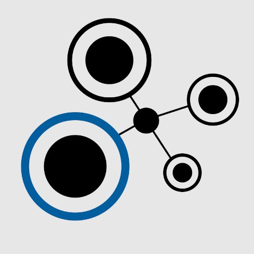
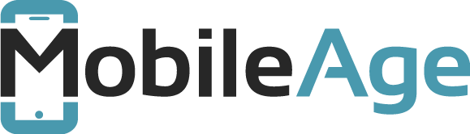
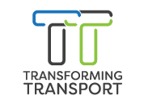
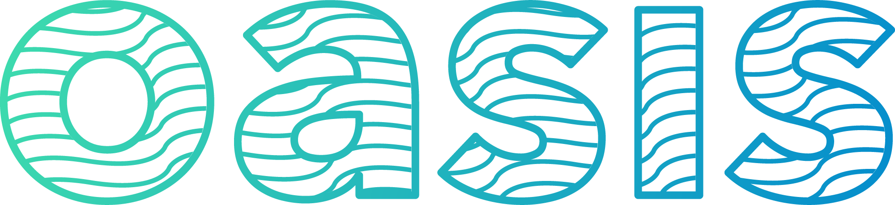

Procurement managers, whether accountable to taxpayers or company boards, need novel decision-making tools that can tackle the complexities of modern supply chains and business transactions, while leveraging the large amounts of data and advanced analytics capabilities available. TheyBuyForYou project will deliver these tools, alongside enabling technologies and data to make procurement across the EU more efficient, competitive, accountable, and fair.
STARS4ALL aims at representing this right of “stars for all the citizens”. Our objective is to encourage citizens to care and preserve the darkness of european skies beyond 2015, the International Year of the Light.
Mobile Age ensures the inclusion of seniors in digital public services thanks to the development of user-friendly mobile applications based on open government data. Thus, it supports their access to civic participation, their involvement in their communities, and helps them benefit from open government data and mobile technologies.
TransformingTransport is an EU-funded project the represents a strong consortium of 47 leading transport, logistics and information technology stakeholders in Europe.
The lack of interoperability is considered as the most important barrier to achieve the global integration of IoT ecosystems across borders of different disciplines, vendors and standards. Indeed, the current IoT landscape consists of a large set of isolated islands that do not constitute a real internet, preventing the exploitation of the huge potential expected by ICT visionaries.
ReTeLe es una red nacional de excelencia que coordina un plan de trabajo sobre la investigación de métodos para acelerar la producción y de recursos lingüísticos abiertos en los cuatro idiomas oficiales en España, así como garantizar su disponibilidad y difusión mediante su publicación en la nube de datos abiertos enlazados.
The CLARITY project will support European Member States in their pursuit for greater trust, transparency and efficiency within their open eGovernment initiatives and highlight best practice within this field.
.
The SlideWiki project aims to exploit the wisdom, creativity and productivity of the crowd for the creation of qualitative, rich, engaging educational content. With SlideWiki users can create and collaborate on slides, diagrams, assessments and arrange this content in richly-structured course presentations.
.
El proyecto esTextAnalytics propone el desarrollo de servicios de Text Analytics en la Nube, mediante el uso de procesamiento del lenguaje natural (NLP) y tecnologías semánticas de anotación y desambiguación, y con la utilización de esDBpedia como base de conocimiento, mejorada con la incorporación de mecanismos automáticos de diagnóstico, reparación y actualización de conocimiento erróneo, así como la gestión de automática de licencias para la incorporación de conocimiento externo propietario.
El proyecto CEF-OASIS está financiado por el programa CEF-Telecom. En él participan instituciones de Bélgica (Open Knowledge Belgium, Stad Gent, iMEC y V-ICT-OR) y España (Ontology Engineering Group – UPM – y Consorcio Regional de Transportes de Madrid – CRTM–).
El proyecto se centra en la apertura y reutilización de datos en el ámbito de los servicios públicos ofrecidos por entidades locales y en el sector del transporte público. Para ello, se trabajará en el uso y extensión de estándares europeos y resultados de iniciativas nacionales, regionales o locales, en ambos sectores.
")
")